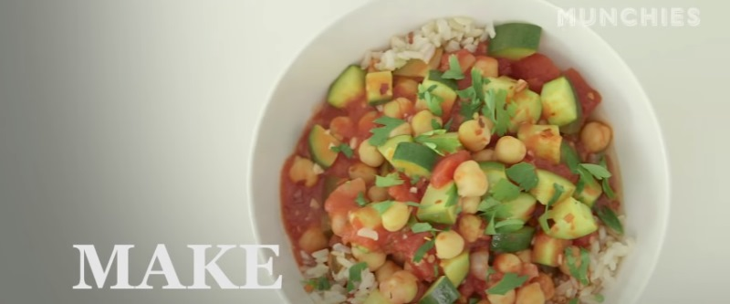

Рагу с нутом и цукини

2 ст.л. оливкового масла вылить на разогретую сковороду, 2 зубчика чеснока почистить и нарезать мелко, выложить на сковороду. Порезать 1 цукини, отправить в сковороду. 1 банку консервированных помидор порубить ножом в банке и выложить на сковороду, туда же положить банку консервированныго нута. Помешать, посолить, добавить любимых преправ (карри). Тушить 20 минут под крышкой, подавать с рисом и посыпать зеленью.